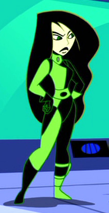

About Shego
Shego is a fictional character from Disney's animated television series Kim Possible. Shego is the secondary antagonist to Kim Possible in the! She works under Dr. Drakken, although she occasionally works with other villains.
Shego's Outfits
- She almost always sports a signature green and black catsuit with an asymmetrical pattern.
- She has one glove and one boot in each colour.
- She is also seen wearing other outfits, including specialised suits and streetwear.
- Source: Kim Possible Wiki